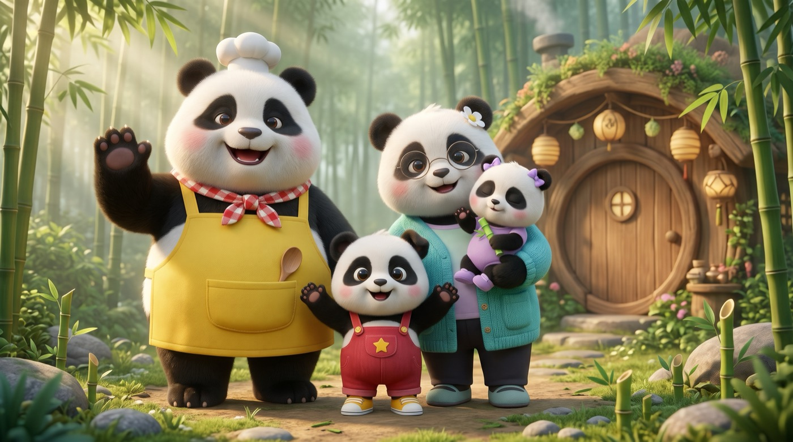

A loving panda family on Bamboo Hill
Turkish cartoons in which Puki and his family learn about sharing, feelings and everyday habits. Calm, cute and safe for little ones.
What is our channel about?
In every episode, curious five-year-old Puki runs into a small problem at home or on Bamboo Hill. He solves it with his family's help, and your child learns right along with him.
Feelings
Jealousy, patience, sharing, saying sorry: learning to name our feelings.
Everyday habits
Brushing teeth, bedtime, tidying up toys, washing hands.
Cooking and food
Making friends with fruit and vegetables in Dad Bobi's fun kitchen.
Songs
Cheerful Turkish songs with simple words to sing together.

Meet the family
Curious Puki, his sleepy baby sister Nini, calm and caring Mom Lili, and Dad Bobi, who turns the kitchen into a playground.
Pandas look a lot alike, so each one has their own colour and outfit. Little ones recognise them at first sight.
See the charactersLatest episodes
🇹🇷 Our cartoons are in Turkish. They are short, calm and easy to follow, so they also work well for children who are learning Turkish.
For parents
Who is the channel for, what are its goals, and how do we keep screen time healthy? You'll find the answers on one page.
Parents' page